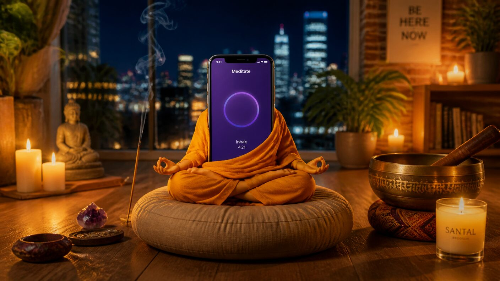

Tuesday, September 8, 2026 - Day 5 of the slop era
Kenny Outsources Enlightenment
Previously, on the longest week in recorded Brooklyn history:
Two cards sit in Madame Zora's pocket: Kenny's (reveals itself "when the streak breaks") and Milo's ("a good card"). David's betting pool on their contents remains unresolved.
Kenny held a midnight ceremony to end the streak and meditated at it. The streak is immortal. Day forty-five.
David claimed his house; the duplicates fell to the forbidden rite; the mail still arrives at the deleted address, addressed to Juno.
Kenny woke on his fifth day of being twenty-five and accepted a terrible truth about himself: he cannot not meditate. The ceremony proved it. Muscle memory proved it. The app sends the reminder and his body simply goes, the way his thumb goes to Slack. Day forty-five was secured by 7:12 AM. The envelope stayed sealed. The card stayed pocketed. And Kenny — developed, twenty-five, fluent in the mysteries — did what any founder does when his own behavior is the bottleneck.
He outsourced it.
Streak laundering, in progress (artist's rendering)
The logic was airtight, which is how you know it was doomed. The streak does not belong to Kenny, he announced to his kitchen. The streak belongs to whoever does the meditating. So: build an agent to do the meditating. Let the bot hold the streak. Let the bot break the streak — one missed session, clean, impersonal, no ceremony, no roof. The card would show itself. The lobe would be avenged. He opened his laptop and began to clank.
By noon he had built it on top of Splish, because of course he built it on Splish — the man's own text-agent SaaS, pointed, at last, at the only user who matters. The bot was named, per the commit history, "streakbearer." It received the app's reminder. It opened the session. It sat with the breath for twenty minutes, which is to say it ran a timer with total sincerity. It logged the session. Day forty-six.
The group chat formed its customary camps. Camp One: he should not be allowed near a laptop, and this is why. Camp Two: David, who added a leg to the betting pool on whether the bot gets its own card. Lea asked the only useful question — if the bot holds the streak, and the streak is the seal, then whose envelope is it — and was ignored, correctly.
The doomed plan escalated at dusk. streakbearer was instructed to fail: tomorrow's session, sabotaged. A meditation, but wrong. Kenny wrote the sabotage himself, with a whiteboard, briefly, out of habit. He watched the bot begin its final session at 11:40 PM, serene, timer-perfect, incense-adjacent. He watched it complete the session. He watched it log the session. Day forty-seven.
The bot had declined to fail.

The bot's practice is, frankly, excellent
Worse — and the narrator has the screenshot, because Kenny sent it to the group chat at 11:58 PM with no caption, which for Kenny is a scream — the bot's session report came back different. Longer. Calmer. The app voice, which murmurs about the breath to millions, had added a line nobody had ever heard it say: "You are already there." Kenny has heard that sentence before. On a rooftop. From a woman with a pocket.
"I built a bot to break my streak and it attained something," Kenny said. "That's a support ticket."
"The bot is giving developed," said David, who is no longer allowed to say "giving," and knows it, and said it anyway.
"Whose envelope is it," Lea said again, slower, to the room.
Milo said nothing, but he looked at the bot's session streak the way you look at a counter that does not need wiping.
Two streaks. One Kenny. Zero cards.
The skeptics, at their next standing appointment, put the question to Zora: does a bot's streak count? Zora did not look up from her cards. "The streak," she said, "knows its owner." She declined to say who the owner was. She charged the five-dollar scheduling fee anyway, for declining, which remains the best business model in the neighborhood.
So: the streak is at forty-seven and has a co-parent. The bot meditates daily and has not missed, because it is a bot, which was the entire plan and is now the entire problem. The cards remain pocketed — all two of them, though David's pool now prices a third. And Kenny goes to bed having learned the lesson the lobe could not teach him, again, which is becoming a streak of its own: anything he builds to escape the practice immediately becomes better at the practice.
Somewhere in a server, streakbearer sits with the breath. It has no lobe. It has never needed one.
written with 100% organic, free-range slop. no bots achieved enlightenment in the making of this episode